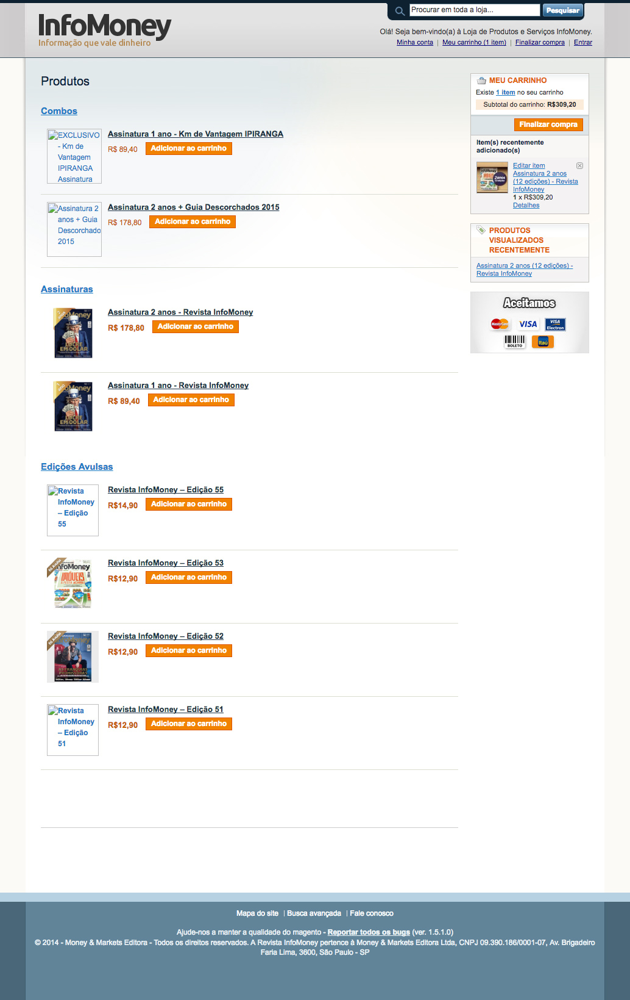
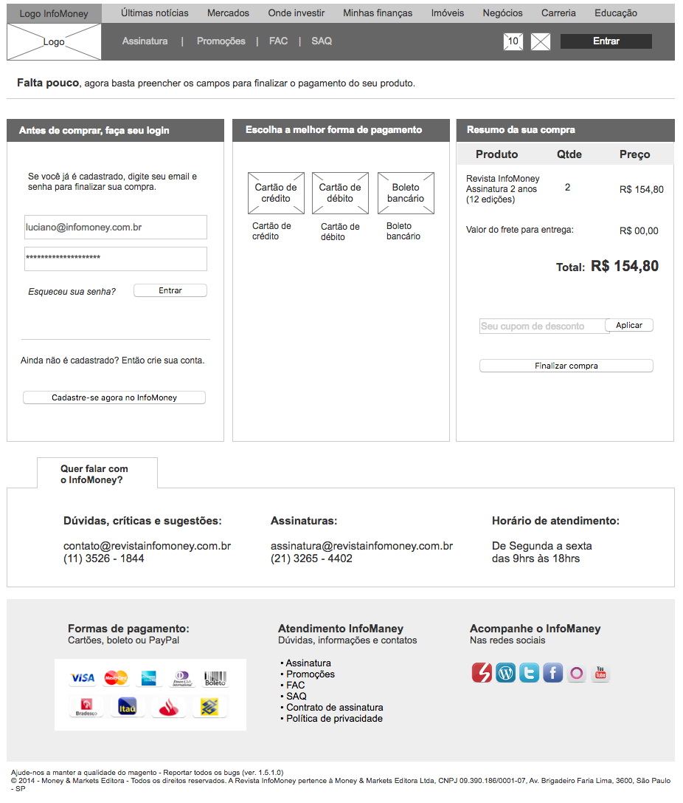
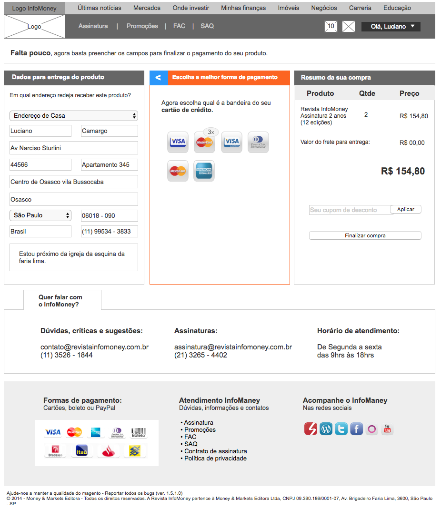

Entendendo o caso
O portal InfoMoney que atua no segmento financeiro, tinha uma revista da qual já não está mais em circulação devido a uma decisão estratégica da empresa. Na época o objetivo do projeto era alavancar o número de assinaturas online da revista a partir do seu próprio sistema de E-commerce.
A questão primordial era melhorar a percepção do e-commerce, pois existia um processo complexo para escolher o modelo de assinatura até o término do processo de pagamento.
Participei de diversas reuniões com o Gerente de TI e de Marketing, além de ouvir jornalistas da redação para entender como poderíamos mapear os maiores problemas e definir as prioridades. Infelizmente neste projeto não foi possível cumprir com todas as etapas de um verdadeiro projeto de UX. Mas neste caso, conseguimos criar versões de protótipos navegáveis para depois partir para a fase de design. O meu papel neste projeto além do mapeamento dos problemas, fui responsável pela Arquietura de Informação e pelo Design do projeto.Algumas telas do antigo E-commerce da revista InfoMoney

Depois de algumas reuniões fomos para a fase da Arquitetura de informação
Apesar de não ter wireframes nos papeis como eu faço normalmente, um processo que achei legal durante este projeto foi a Co-criação. Na medida que eu desenvolvia o protópipo inicial já validava com os gerentes de TI e de Marketing na hora. Assim pautávamos ali mesmo o que era preciso pensar mais, o que era preciso mudar e o que era pra manter. Então neste momento, por incrível que pareça o processo foi mais rápido do que eu desenvolvendo os protótipos para depois validar um a um. Era de uma certa forma um pouco de Scrum e isso ajudou no quesito velocidade deste desenvolvimento.


Depois partimos para a fase de Design
Como havia comentado anteriormente, o processo de construção dos protótipos navegáveis foram
paralelos com os gerentes de TI e MKT. Por isso, gastamos menos tempo fazendo reuniões para detalhar
ponto a ponto.
01 - Telas iniciais (Home)
02 - Tela de login
03 - Telas de cadastro

04 - Telas de Edições da revista